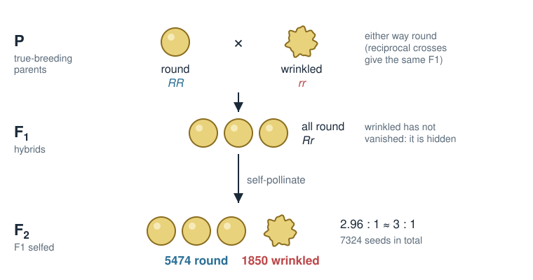
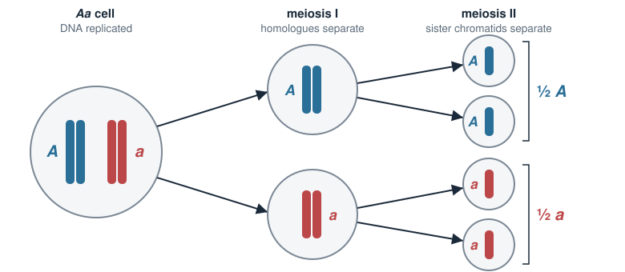
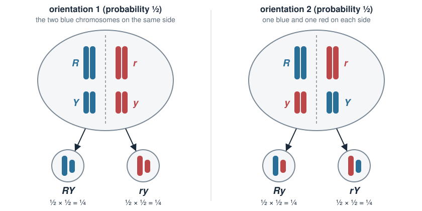
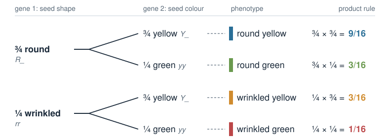

Part 1: Mendelian genetics. Monohybrid and dihybrid crosses, and why meiosis explains them
Basic and molecular genetics (5MO104)
About this lecture
In the 1850s and 1860s, Gregor Mendel crossed garden peas in the garden of his monastery in Brno and counted the offspring. From the numbers alone he deduced that inheritance works through discrete factors (we now say genes), present in pairs, that separate cleanly when gametes form.
Same result both ways, so it does not matter which parent gives which form
Either/or traits: round or wrinkled, never “medium”
Offspring can be sorted into classes and counted
Large numbers and several generations
Ratios become visible above the noise
Mendel’s real innovation was quantitative: he counted, and he looked for ratios.
The seven traits
Mendel studied seven traits. In every case the F1 showed only one form (the dominant one), and the F2 showed both, at about 3 : 1.
Trait
Dominant
Recessive
F2 dominant
F2 recessive
Ratio
Seed shape
round
wrinkled
5474
1850
2.96 : 1
Seed colour
yellow
green
6022
2001
3.01 : 1
Flower colour
purple
white
705
224
3.15 : 1
Pod shape
inflated
constricted
882
299
2.95 : 1
Pod colour
green
yellow
428
152
2.82 : 1
Flower position
axial
terminal
651
207
3.14 : 1
Stem length
tall
dwarf
787
277
2.84 : 1
None of the ratios is exactly 3 : 1. That is what random sampling looks like. Whether 2.82 : 1 is “close enough” is a question for the χ² test, in the next unit.
The monohybrid cross
Follow one trait through three generations.

P: true-breeding round × true-breeding wrinkled.
F1: all round. Wrinkled seems to have vanished, but…
F2 (F1 self-fertilised): wrinkled comes back, in about a quarter of the seeds.
Seed colour, drawn in 1914: yellow and green parents, F1 pod all yellow, and an F2 pod with both colours side by side. Each seed is a separate offspring.
Mendel’s model
Mendel explained the numbers with five ideas. In modern words (recap of the vocabulary from Genetics as information):
Each trait is controlled by a gene, which comes in alternative forms, alleles: R (round) and r (wrinkled).
Each plant carries two alleles of the gene, one from each parent. RR and rr are homozygous; Rr is heterozygous.
In Rr, the dominant allele R decides the phenotype; r is recessive. So RR and Rr look the same.
Each gamete carries one allele, chosen at random: an Rr plant makes ½ R and ½ r gametes.
Fertilisation combines gametes at random.
The genotype is the pair of alleles (Rr). The phenotype is what you see (round).
The Punnett square: 1 : 2 : 1 and 3 : 1
Rr × Rr:
½ R
½ r
½ R
RR
Rr
½ r
Rr
rr
Four equally likely cells, each with probability ½ × ½ = ¼:
The 3 : 1 ratio is a 1 : 2 : 1 ratio in disguise: dominance merges RR and Rr into one phenotype.
Checking the 1 : 2 among the dominant F2
The model makes a prediction you can test: among the round F2 plants, ⅓ should be RR and ⅔ should be Rr.
Mendel tested it by selfing the F2 plants and looking at their offspring (the F3):
F2 round plant
Its selfed offspring
Expected share
Mendel’s count
RR
all round (breeds true)
⅓
193
Rr
round and wrinkled, 3 : 1
⅔
372
193 : 372 is 1 : 1.93, close to the predicted 1 : 2 among 565 plants.
The wrinkled F2 plants (rr) always bred true, as the model says they must.
The law of segregation, explained by meiosis
Law of segregation. The two alleles of a gene separate (segregate) during gamete formation, so each gamete gets one of them, with equal probability.

The two alleles sit on the two homologous chromosomes. In meiosis I the homologues go to opposite poles, so an Aa cell gives ½ A and ½ a gametes.
The testcross
A round plant can be RR or Rr. How do you tell them apart? Cross it to the homozygous recessive (rr):
Unknown parent
× rr gives
Offspring
RR
all Rr
all round
Rr
½ Rr, ½ rr
1 round : 1 wrinkled
The rr parent only gives r gametes, so it hides nothing: each offspring’s phenotype shows directly which allele came from the unknown parent.
A single wrinkled offspring proves that the unknown parent is Rr. Many round offspring and no wrinkled ones make RR likely, but never certain: with n offspring from an Rr parent, the chance that all are round is (½)n.
The dihybrid cross
Now follow two traits at once: seed shape (R/r) and seed colour (Y yellow / y green).
Law of independent assortment. Alleles of different genes go into gametes independently of each other. An Rr Yy plant makes RY, Ry, rY and ry gametes, ¼ each.
Independent assortment, explained by meiosis

Genes on different chromosomes: at metaphase I each homologue pair lines up independently of the other. Both orientations are equally likely, so the four gamete types are equally frequent: ¼ RY, ¼ ry, ¼ Ry, ¼ rY.
Warning: this needs the two genes to be on different chromosomes (or far apart on the same one). Genes close together on one chromosome are linked and do not assort independently. That is Part 2 of the course.
Writing gametes, step by step
A gamete carries one allele of every gene. To list the gametes of a genotype, take one gene at a time and combine:
Genotype
Gene 1 gives
Gene 2 gives
Gametes
Kinds
Rr Yy
R or r
Y or y
RY, Ry, rY, ry (¼ each)
4
RR Yy
R only
Y or y
RY, Ry (½ each)
2
Rr yy
R or r
y only
Ry, ry (½ each)
2
rr yy
r only
y only
ry
1
Only heterozygous genes double the number of gamete types: 2k kinds for k heterozygous genes.
A gamete is neverRr or RRY: it has exactly one letter per gene.
The rows and columns of a Punnett square are these gametes, each with its frequency.
The branch-line method
A Punnett square for two genes has 16 cells; for three genes, 64. The branch-line (forked-line) method is faster: treat each gene separately, then multiply along each branch.

It works because the genes assort independently: each gene contributes its own ratio, and the product rule combines them.
Worked example: two different parents
Tall (T) is dominant to dwarf (t), round (R) to wrinkled (r). Cross tall round Tt Rr × dwarf round tt Rr.
Step 1. One gene at a time.
Height: Tt × tt is a testcross → ½ tall, ½ dwarf.
Shape: Rr × Rr is a monohybrid cross → ¾ round, ¼ wrinkled.
Step 2. Multiply along the branches.
Height
Shape
Probability
½ tall
¾ round
3/8 tall round
½ tall
¼ wrinkled
1/8 tall wrinkled
½ dwarf
¾ round
3/8 dwarf round
½ dwarf
¼ wrinkled
1/8 dwarf wrinkled
Ratio 3 : 1 : 3 : 1. Check: the four probabilities sum to 1. A Punnett square would need 4 × 2 = 8 cells.
Many genes: the product rule
Aa Bb Cc × Aa Bb Cc, three unlinked genes, complete dominance. Treat each gene as its own monohybrid cross, then multiply.
Next: Probability & the χ² test. We said “close to 3 : 1” many times. The χ² goodness-of-fit test (chisq.test in R) tells us whether a deviation like 5474 : 1850 is ordinary sampling noise.
Extensions to Mendel. Real alleles are not always completely dominant, and genes interact (epistasis), giving modified ratios such as 9 : 7 and 12 : 3 : 1.
Pedigree analysis. Applying segregation to human families, where we cannot choose the crosses.
Part 2: Linkage. Independent assortment fails for genes close together on the same chromosome, and that failure is how genes are mapped.